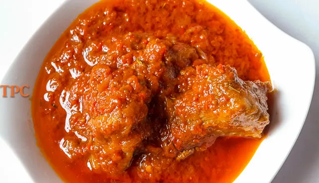

Tomato Stew Recipe

Description
A plate of mouth watering egg sauce. One of the best choice for African family gatherings and a
sure means to test your ability to prepare that lovely dish you see on TV. Best combination for yam.
Meal prep just got easy!
Ingredients
- Meat and/or fish
- fresh tomato as desired
- Onions
- Pepper (fresh and/or dried) as desired
- salt, Magi, Kitchen glory
- Groundnut oil
Steps
- Prepare meet and fish to your taste, and sieve the cooked water
- Slice your tomatoes, onions, and pepper
- Fry onions and tomatoes in oil midly
- Add pepper, salt and other ingredience to taste
- Add the sieved water from meat and fish to taste
- Add scent leave
- Serve stew with rice or yam!